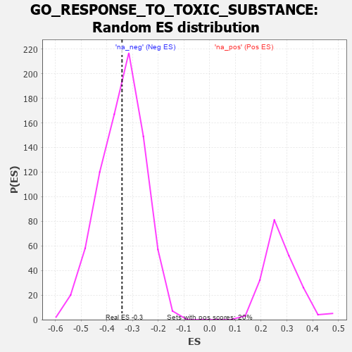

| | | Dataset | 7d |
| Phenotype | NoPhenotypeAvailable |
| Upregulated in class | na_neg |
| GeneSet | GO_RESPONSE_TO_TOXIC_SUBSTANCE |
| Enrichment Score (ES) | -0.34065476 |
| Normalized Enrichment Score (NES) | -0.9966701 |
| Nominal p-value | 0.46800503 |
| FDR q-value | 0.8758611 |
| FWER p-Value | 1.0 |
Table: GSEA Results Summary
 Fig 1: Enrichment plot: GO_RESPONSE_TO_TOXIC_SUBSTANCE
Fig 1: Enrichment plot: GO_RESPONSE_TO_TOXIC_SUBSTANCE
Profile of the Running ES Score & Positions of GeneSet Members on the Rank Ordered List
| PROBE | GENE SYMBOL | GENE_TITLE | RANK IN GENE LIST | RANK METRIC SCORE | RUNNING ES | CORE ENRICHMENT | | 1 | SRSF9 | | | 240 | 0.950 | 0.0070 | No |
| 2 | BAX | | | 387 | 0.711 | 0.0164 | No |
| 3 | HTRA2 | | | 527 | 0.621 | 0.0232 | No |
| 4 | SRF | | | 542 | 0.615 | 0.0456 | No |
| 5 | CCNB1 | | | 581 | 0.601 | 0.0644 | No |
| 6 | XPA | | | 1070 | 0.469 | 0.0212 | No |
| 7 | AIFM1 | | | 1072 | 0.469 | 0.0394 | No |
| 8 | RAD51 | | | 1090 | 0.466 | 0.0555 | No |
| 9 | CCS | | | 1302 | 0.427 | 0.0457 | No |
| 10 | CDK4 | | | 1626 | 0.370 | 0.0194 | No |
| 11 | WAPL | | | 1758 | 0.344 | 0.0164 | No |
| 12 | GPX4 | | | 1989 | 0.306 | -0.0006 | No |
| 13 | KCNC2 | | | 2075 | 0.295 | 0.0002 | No |
| 14 | BMP7 | | | 2107 | 0.290 | 0.0076 | No |
| 15 | KDM1A | | | 2447 | 0.237 | -0.0259 | No |
| 16 | SCFD1 | | | 2783 | 0.185 | -0.0609 | No |
| 17 | GPX1 | | | 3109 | 0.135 | -0.0966 | No |
| 18 | GCH1 | | | 3166 | 0.127 | -0.0986 | No |
| 19 | AHR | | | 3175 | 0.126 | -0.0947 | No |
| 20 | PRDX4 | | | 3214 | 0.120 | -0.0948 | No |
| 21 | PRDX5 | | | 3547 | 0.068 | -0.1340 | No |
| 22 | MAPK3 | | | 3589 | 0.062 | -0.1368 | No |
| 23 | FIS1 | | | 3654 | 0.051 | -0.1429 | No |
| 24 | SESN1 | | | 4192 | -0.041 | -0.2090 | No |
| 25 | ERCC6 | | | 4464 | -0.087 | -0.2398 | No |
| 26 | GSTT1 | | | 4594 | -0.117 | -0.2515 | No |
| 27 | PIM1 | | | 4776 | -0.152 | -0.2684 | No |
| 28 | DRD2 | | | 5088 | -0.221 | -0.2990 | No |
| 29 | CDK1 | | | 5264 | -0.262 | -0.3108 | No |
| 30 | DHX15 | | | 5366 | -0.288 | -0.3122 | No |
| 31 | PRDX3 | | | 5389 | -0.293 | -0.3035 | No |
| 32 | CERS1 | | | 5518 | -0.325 | -0.3069 | No |
| 33 | ABCG2 | | | 5556 | -0.335 | -0.2984 | No |
| 34 | TLR2 | | | 5761 | -0.395 | -0.3087 | No |
| 35 | SZT2 | | | 5882 | -0.429 | -0.3070 | No |
| 36 | SCN9A | | | 6146 | -0.518 | -0.3199 | Yes |
| 37 | RGN | | | 6233 | -0.547 | -0.3092 | Yes |
| 38 | PRDX6 | | | 6396 | -0.615 | -0.3055 | Yes |
| 39 | OSCP1 | | | 6594 | -0.707 | -0.3027 | Yes |
| 40 | MGST3 | | | 6896 | -0.865 | -0.3067 | Yes |
| 41 | DDC | | | 7019 | -0.950 | -0.2849 | Yes |
| 42 | PXDN | | | 7104 | -1.001 | -0.2562 | Yes |
| 43 | GSTM1 | | | 7256 | -1.129 | -0.2310 | Yes |
| 44 | WDR35 | | | 7357 | -1.225 | -0.1955 | Yes |
| 45 | TTPA | | | 7575 | -1.516 | -0.1635 | Yes |
| 46 | ASNS | | | 7595 | -1.547 | -0.1052 | Yes |
| 47 | TRPM6 | | | 7645 | -1.637 | -0.0472 | Yes |
| 48 | KCNC1 | | | 7835 | -2.249 | 0.0172 | Yes |
Table: GSEA details [plain text format]

Fig 2: GO_RESPONSE_TO_TOXIC_SUBSTANCE: Random ES distribution
Gene set null distribution of ES for GO_RESPONSE_TO_TOXIC_SUBSTANCE